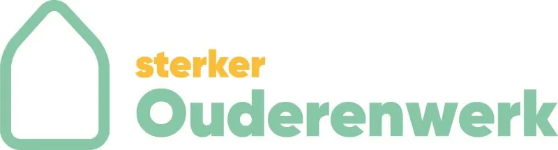

Nieuws ·
Sterker Ouderenwerk: Een Nieuwe Naam en Locatie voor Toonaangevend Ouderenwerk in Nijmegenregio Arnhem-Nijmegen
In een spannende ontwikkeling binnen het sociale werklandschap van Nijmegen, maakt Langer Thuis Nijmegen een significante evolutie door. Met ingang van vandaag wordt de organisatie omgedoopt tot **Sterker Ouderenwerk**, een naam die beter uitdrukt wat we zijn: een kracht in de zorg en ondersteuning voor de oudere generatie in Nijmegen. Deze naamswijziging gaat gepaard met een verhuizing naar een nieuwe locatie, waarmee we onze missie om senioren boven de 65 jaar te ondersteunen, verder versterken.

Over Sterker Ouderenwerk
Sterker Ouderenwerk, vroeger bekend als Langer Thuis Nijmegen, blijft zich met volle overtuiging inzetten voor het welzijn van senioren in onze gemeenschap. Al meer dan 55 jaar bieden wij een scala aan diensten – van informatieverstrekking en praktische hulp tot het bevorderen van plezierige dagbesteding en het waarborgen van een veilige thuisomgeving. Ons ervaren en toegewijde team van medewerkers en vrijwilligers blijft het vertrouwde aanspreekpunt voor ouderen en hun mantelzorgers.
Nieuwe Locatie voor Nieuwe Mogelijkheden
Met de verhuizing naar het nieuwe adres **Dominee Creutzbergweg 3, 6532 XP Nijmegen**, opent Sterker Ouderenwerk nieuwe deuren voor haar dienstverlening. Vanaf maandag 5 februari 2024 verwelkomen we u graag in ons nieuwe kantoor, dat we delen met Vrijwilligerscentrale Nijmegen en vrijwilligersorganisatie GVO de Klup. Deze samenwerking tussen welzijnsorganisaties onderstreept onze toewijding aan het verbeteren van de levenskwaliteit van ouderen in Nijmegen.
Onze Verbinding met U
De rebranding en de verhuizing zijn strategische stappen om onze dienstverlening te verbeteren, de samenwerking met lokale welzijnsorganisaties te intensiveren en onze zichtbaarheid en bereikbaarheid voor de inwoners van Nijmegen te vergroten.
Belangrijke Contactinformatie:
Website: www.sterkerouderenwerk.nl
E-mail: ouderenwerk@sterker.nl
Telefoon: 088 – 00 17 121
We zijn dankbaar voor het vertrouwen dat u heeft getoond in Langer Thuis Nijmegen en zijn enthousiast om deze nieuwe fase onder de naam Sterker Ouderenwerk in te gaan. We nodigen u uit om samen met ons deze nieuwe weg in te slaan, waarbij we ons blijven inzetten voor de ondersteuning en verrijking van het leven van onze ouderen.